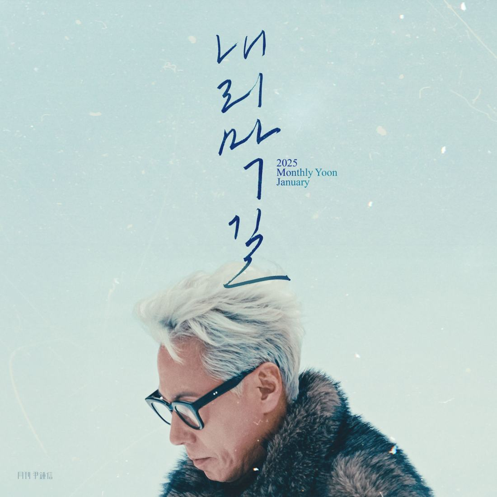

안녕하세요 한라보엠입니다.
오늘은 윤종신의 내리막길에 대해 이야기해보려 합니다. 이 곡은 2025년 '월간 윤종신' 1월호로 발표된 곡으로, 인생의 후반부에 접어든 한 남자의 심정을 담백하게 표현한 노래입니다. '내리막길'은 2012년 6월에 발표된 '오르막길'의 후속작이라고 할 수 있습니다. '오르막길'이 인생의 상승기를 노래했다면, '내리막길'은 그 정점을 지나 하강하는 시기를 그리고 있죠. 두 곡 모두 인생의 여정을 길에 비유하여 표현했다는 점이 흥미롭습니다. 윤종신의 노래중에는 이렇게 반대의 입장에서 이야기하는 노래들이 몇곡이 있습니다. 하림이 부른 출국(2001)과 박정현의 도착(2012), 윤종신의 히트곡 좋니(2017)와 민서가 부른 좋아(2017)가 대표적인 노래들이 되겠습니다.

2025 월간 윤종신 1월호 - 내리막길
이 곡은 삶의 중반부를 지나 후반부로 향하는 이의 마음가짐을 담고 있습니다. 세월에 따른 관점과 생각, 태도의 변화를 섬세하게 표현하고 있죠. 윤종신은 이 곡을 통해 동년배들에게 하고 싶은 말을 전하고 있다고 합니다.
가사를 살펴보면, 인생의 하강기에 접어들었음을 인정하면서도 그 안에서 새로운 의미를 찾으려는 모습이 드러납니다. '내리막길'이라는 표현에서 느껴지는 쓸쓸함과 동시에, 그 길을 걸어가는 이의 담담한 태도가 인상적입니다.
윤종신 특유의 감성적인 멜로디와 섬세한 가사가 돋보이는 곡입니다. 피아노 반주를 중심으로 한 편안한 분위기의 발라드로, 윤종신의 차분한 목소리가 노래의 메시지를 더욱 깊이 있게 전달합니다.
월간 윤종신 내리막길 노래 가사
그래 바로 거기였어 잠시 머물던 거기가
제일 높은 곳이었어
더 올라가는 줄 알고 남은 힘을 쓰다가 느껴지는 건
나의 길은 나도 몰래
아래로 기울어진 내리막이란 걸
뒤돌아 보니 그래
기억나니 올라갈 때 거친 숨을 버텨 줬던
우리 꿈은 이룬 걸까
이룬 줄도 모른 채로 마냥 오르기만 한건 아닐까
이제 남은 길이 보여
오르는 사람들이 더 부러운 건
굳게 서로 잡은 손
자 내려가자 터벅터벅 완만하고 길었으면
오르던 추억 하나하나 떠올라
고마워 굳이 고된 나를 택한 걸 오오오오
부디 가파르지 않았으면 결국은 도착하는 곳
우리 못 한 얘기 하나도 없도록
함께해 준 그댈 위해
계속 사랑해요 저 끝까지
땀은 이제 나지 않아 식어버려 추울까 봐
이제 다른 걱정이야
잘못 디뎌 삐끗하면 남은 길이 힘들까
한 걸음 한 걸음
내 사람아 그대 손을 절대 놓지 않을게 저 멀리를 봐
아름다운 우리 길
자 내려가자 터벅터벅 완만하고 길었으면
오르던 추억 하나하나 떠올라
고마워 굳이 고된 나를 택한 걸 오오오오
부디 가파르지 않았으면 결국은 도착하는 곳
우리 못한 얘기 하나도 없도록
함께해 준 그댈 위해
계속 사랑해요 저 끝까지
자 도착하면 더 갈 곳이 없는 그곳에 닿으면
지쳐 누군가 먼저 잠이 든다면
귓가에 수고했다고
그대 함께여서 좋았다고
계속 사랑할게 저 끝까지
'월간 윤종신' 프로젝트
1월호 '내리막길'
월간 윤종신 편집팀입니다
yoonjongshin.com
'내리막길'은 윤종신의 장수 프로젝트인 '월간 윤종신'의 일환으로 발표되었습니다. '월간 윤종신'은 2010년부터 시작된 프로젝트로, 매달 새로운 곡을 발표하는 형식입니다. 이 프로젝트를 통해 윤종신은 다양한 장르와 아티스트와의 협업을 선보이며 음악적 실험을 계속해왔습니다. 윤종신은 가수, 작사가, 작곡가로서 30년 넘게 한국 대중음악계에서 활동해왔습니다. 그의 음악은 시대의 변화와 개인의 성장을 반영하며 꾸준히 진화해왔죠. '내리막길'은 그런 윤종신의 음악 세계를 잘 보여주는 곡이라고 할 수 있습니다.
맺음말
'내리막길'은 단순히 나이 듦에 대한 노래가 아닌, 인생의 후반부에 접어들면서 느끼는 복잡한 감정과 생각들, 그리고 그 속에서 발견하는 새로운 의미에 대한 노래입니다. 윤종신은 이 곡을 통해 우리에게 인생의 모든 순간이 의미 있다는 메시지를 전하고 있는 것 같습니다.
여러분도 한번 '내리막길'을 들어보시는 건 어떨까요? 잔잔한 멜로디와 의미 있는 가사가 여러분의 마음에 잔잔한 울림을 줄 것입니다. 그리고 어쩌면 자신의 인생 여정에 대해 새로운 시각을 가질 수 있을지도 모릅니다.
음악은 우리의 삶을 반영하고, 때로는 위로가 되어줍니다. 윤종신의 '내리막길'이 여러분에게도 그런 의미 있는 노래가 되길 바랍니다. 함께 들어보세요.